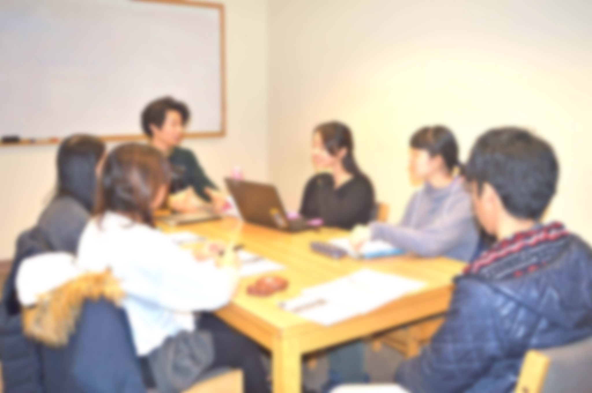
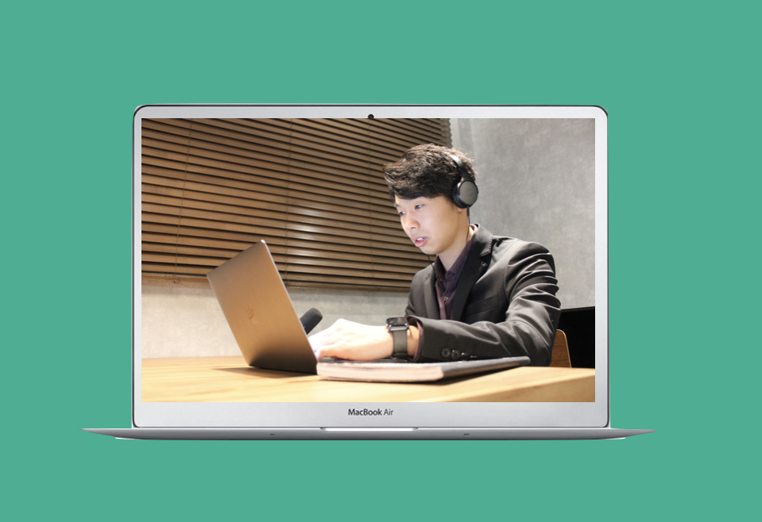

智自舎塾は海外での経験を持ち寄り学ぶ舎です。
帰国生入試とＡＯ入試対策を個別指導で行うことで
オンリーワンの合格ストーリーを生み出します

海外での留学生活やボランティアなどの経験をした中高生にはその国でしか見らなかった視点があります。その視点や経験を一緒に見つけ、帰国生入試やAO入試を戦っていきます。智自舎塾の授業において、講師陣が答えを提供することは一切ありません。ひたすら生徒に質問を投げかけ、生徒からそれぞれの答えを導くのが智自舎塾の役目だと考えています。

地方や海外からも帰国生入試や推薦入試対策をスムーズに行うために常に最新技術を採用しています。紙媒体の教科書よりも海外や地方にスピーディーに最新の情報や教材を届けることが可能です。講師と生徒がコミュニケーションがスムーズにとれるための智自舎塾のシステムはの環境が揃っていますのでご安心ください。一度、体験授業でお試しください。
卒業した生徒の声
智自舎塾に出会えてよかった！
私は智自舎塾に出会う前まで、大学のホームページで志望校を決めていました。しかし、智自舎塾でオープンキャンパスの重要性や教授など幅広くその大学について知ることが大切だと気付きました。智自舎塾で学んだことは、間違いなく将来に自分がやりたいこと、自分が興味がある分野にいくための準備に繋がります！
智自舎塾に出会えてよかった！
私は智自舎塾に出会う前まで、大学のホームページで志望校を決めていました。しかし、智自舎塾でオープンキャンパスの重要性や教授など幅広くその大学について知ることが大切だと気付きました。智自舎塾で学んだことは、間違いなく将来に自分がやりたいこと、自分が興味がある分野にいくための準備に繋がります！
智自舎塾に出会えてよかった！
私は智自舎塾に出会う前まで、大学のホームページで志望校を決めていました。しかし、智自舎塾でオープンキャンパスの重要性や教授など幅広くその大学について知ることが大切だと気付きました。智自舎塾で学んだことは、間違いなく将来に自分がやりたいこと、自分が興味がある分野にいくための準備に繋がります！
スタッフ紹介

大庭啓太
Change Maker, LLC 代表兼CEO/ 智自舎塾 塾長
1998年生まれ。東京都出身。青山学院大学在学中。中学３年生で単身カナダに渡航し現地の公立高校卒業。シリア難民の子供たちのサポートやアジア最貧国ネパールでの単身教育調査を高校在学中に経験。自分の興味や関心があることを追求することの大切さを受験を通して改めて体感し、高校３年生の時にカナダで智自舎塾を創設。その後、日本に拠点を移しChange Maker合同会社を起業、代表兼CEOに就任。毎日新聞や日本テレビ スッキリなどでも活動が取り上げられる。
大庭啓太
Change Maker, LLC 代表兼CEO/ 智自舎塾 塾長
1998年生まれ。東京都出身。青山学院大学在学中。中学３年生で単身カナダに渡航し現地の公立高校卒業。シリア難民の子供たちのサポートやアジア最貧国ネパールでの単身教育調査を高校在学中に経験。自分の興味や関心があることを追求することの大切さを受験を通して改めて体感し、高校３年生の時にカナダで智自舎塾を創設。その後、日本に拠点を移しChange Maker合同会社を起業、代表兼CEOに就任。毎日新聞や日本テレビ スッキリなどでも活動が取り上げられる。
"MESSAGE"
高校三年間をカナダで過ごし、帰国生入試を受けることになった私は周りが高額な予備校に通うことに疑問を感じ、個別塾とAO入試対策の塾で必要なことを必要な時だけ指導を受けました。結果として合格することが出来ました。しかし、多くの友人が大手予備校に何十万円という資金をつぎ込んだのにも関わらず自分の思いとマッチングした大学に出会えず、志望校から合格をもらえないことに対する疑問は残ったままでした。
帰国生入試や推薦入試では、今までやってきたことや大学への思いが最も重要視されます。そんな入試を受ける高校生に必要なことは、高額な費用を大手予備校に払い大人数指導を受けることではないと自身の経験を通して確信しました。
この経験がキッカケで、私は智自舎塾を設立しました。海外での経験がある高校生は、他の高校生よりも入試において勝負できる材料は多いです。その材料を大手予備校では調理しきることが難しかったり、一人一人にあった味付けをすることが難しく、結果として志望校からの合格を勝ち取れません。
智自舎塾ではじっくり生徒一人一人と対話をし、各々の本当の「やりたいこと」を見つけていきます。その志を実現するためにどの大学に進学することがベストなのかを探っていきます。つまり、智自舎塾では受験勉強をするのではなく、自分の進むべき道について真剣に考え結果として大学の合格があると考えています。
そのことで、大学に強い思いが伝わり合格をもらえることはもちろん、大学に入学後も何をやるべきなのかがハッキリし、志に向け着々と歩き始められるのです。
智自舎塾では合格というゴールではなく「スタート」をみなさまにお届けできるよう努力しています。
教室紹介
料金プラン
月４コマコース
18,800円(税別)
月8コマコース
32,800円(税別)
通い放題コース
72,800円(税別)
お問い合わせ
メールでのお問合わせ
info@chijisya.jp
（24時間365日受付）
※お返事に最大２営業日かかる場合があります。
お電話でのお問合わせ
050-5240-1638
（平日 14:00〜20:00・土日祝 10:00〜18:00）